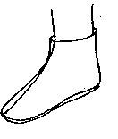
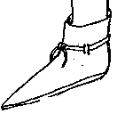
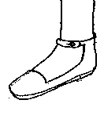
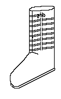

| (Note: Some of the freakier non-historical speculative shoes have been
removed)
|
|
|
 |
Simple Slipper |
|
 |
Basic Ankle Boot |
|
 |
Ankle Latched Shoe (Speculative) |
|
 |
Lace-up Boot |
Return to Contents
Footwear of the Middle Ages - Shoe Design List/Anglo-Norman Era (c1000-1200), by I.
Marc Carlson. Copyright 1996
This page is given for the free exchange of information, provided the author's name is
included in all future revisions, and no money change hands, other than as expressed in
the Copyright Page.